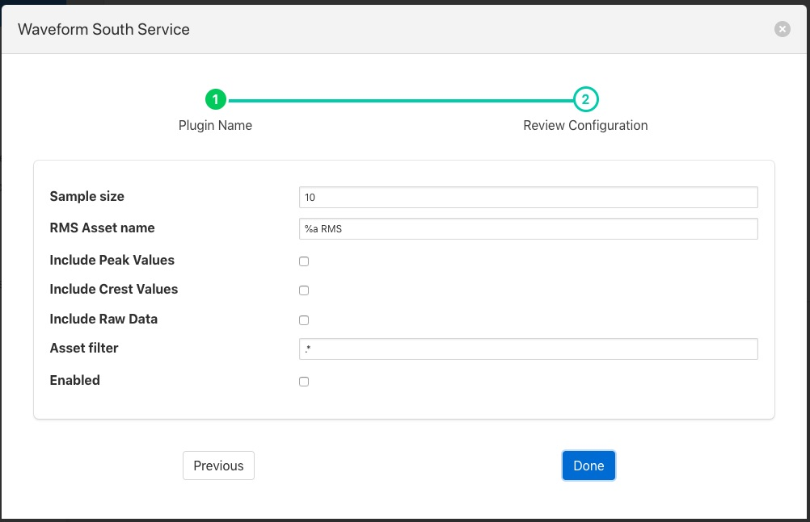

Root Mean Squared (RMS) Filter¶
The foglamp-filter-rms filter is designed to accept some periodic data such as a sample electrical waveform, audio data or vibration data and perform a Root Mean Squared, RMS operation on that data to supply power of the waveform. The filter can also return the peak to peak amplitude f the waveform over the sampled period and the crest factor of the waveform.
Note
peak values may be less than individual values of the input if the asset value does not fall to or below zero. Where a data value swings between negative and positive values then the peak value will be greater than the maximum value in the data stream. For example if the minimum value of a data point in the sample set is 0.3 and the maximum is 3.4 then the peak value will be 3.1. If the maximum value is 2.4 and the minimum is zero then the peak will be 2.4. If the maximum value is 1.7 and the minimum is -0.5 then the peak value will be 2.2.
RMS, also known as the quadratic mean, is defined as the square root of the mean square (the arithmetic mean of the squares of a set of numbers).
Peak to peak, is the difference between the smallest value in the sampled data and the highest, this give the maximum amplitude variation during the period sampled.
Crest factor is a parameter of a waveform, showing the ratio of peak values to the effective value. In other words, crest factor indicates how extreme the peaks are in a waveform. Crest factor 1 indicates no peaks, such as direct current or a square wave. Higher crest factors indicate peaks, for example sound waves tend to have high crest factors.
The user may also choose to include or not the raw data that is used to calculate the RMS values via a switch in the configuration.
Where a data stream has multiple assets within it the RMS filter may be limited to work only on those assets whose name matches a regular expression given in the configuration of the filter. The default for this expression is .*, i.e. all assets are processed.
RMS filters are added in the same way as any other filters.
- Click on the Applications add icon for your service or task.
- Select the rms plugin from the list of available plugins.
- Name your RMS filter.
- Click Next and you will be presented with the following configuration page
|  |
- Configure your RMS filter
- Sample size: The number of data samples to perform a calculation over.
- RMS Asset name: The asset name to use to output the RMS values. “%a” will be replaced with the original asset name.
- Include Peak Values: A switch to include peak to peak measurements for the same data set as the RMS measurement.
- Include Crest Values: A switch to include crest measurements for the same data set as the RMS measurement.
- Include Raw Data: A switch to include the raw input data in the output.
- Asset Filter: A regular expression to limit the asset names on which this filter operations. Useful when multiple assets appear in the input data stream as it allows data which is not part of the periodic function that is being examined to be excluded.